病院の改修工事における工事車両導線被討デモ
目次
1 目的
2 前提条件
3 検討ケースについて
4 検討結果アウトプット例
5 その他の主な検討可能事項
目的
病院の改修工事を計画するにあたり、病院関係車両（救急車両、物流車両、患者車両など）の安全性を確保しつつ、工事車両の導線を計画する必要があります。その計画をする上での現況の課題把握及び、仮説案の評価と絞り込みを行うことを目的とします。
検討内容
- 現況交通の課題把握。
- 工事車両導線計画仮説案の評価と絞込。
評価方法
- ア二メーション
- 旅行時間、平均速度、渋滞長（本検討では旅行時間のみ算出）
シミュレーション検討範囲は下図の赤色箇所とし、下表の需要を用いて検討しております。
検討範囲図
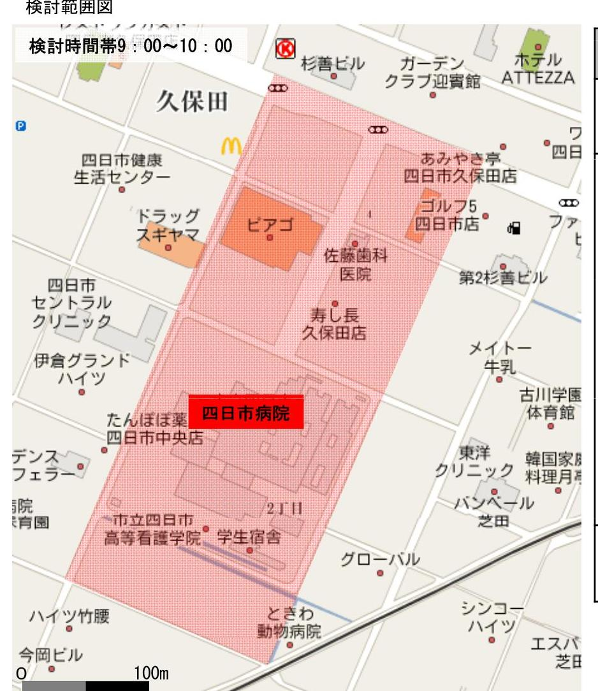
表 車両属性別の需要
| 車両属性 | 台(人)時 | 備考 | |
|---|---|---|---|
| 一般車両 | 649 | 国道477号線の交通センサスデー夕を使用。 | |
| 病院関係者車両・歩行者 | 救急車両 | 1 | H20年の救急搬送患者数（6,134名 /年) $\div 365$ （日） $\div 24$ （時間） $=$ 0.7 |
| 物流車両 | $\begin{gathered} 20 \text { 台 } \div 2 \ \text { (施設規 } \ \text { 模 })=10 \end{gathered}$ | 東京大学付属病院（四日市病院上 り患者数などが約2倍）での物流車両のピーク時の搬入件数20台/時を使用。 | |
| 外来患者 (自家用車) |
$\begin{aligned} & 300 \text { 名 } \times 2 \ & (\text { 出入 }) \ & =600 \end{aligned}$ | 1800名（H19年外来患者数約） $\div$ 6 時間（営業時間） $=300$ 名を使用。処病院に入ってくるバスが 1時間に 1 本程度なので、外来患者 の自家用車利用率を $100 \%$ と仮定。 | |
| 患者・付添者 | 1000 | 自家用車で来る患者にはほぼ付き添いが 1 人いると仮定（南駐車場 のみ加味) | |
| 工事車両 | $\begin{gathered} 40 \text { 台 } \times 2 \ (\text { 出入 })= \ 80 \end{gathered}$ | 仮設定 |
宗交通センサスデータ及ネット情報を収集して設定
井03 検討ケース
下表の 3 つを検討ケースとしました。工事車両の導線に関しては下図のように設定を行っております。
検討ケース
表 検討ケース一覧
| ケース名 | 工事車両 | 交通車両通行禁止区間 | 備考 |
|---|---|---|---|
| ケース0 | なし | - | 現況 |
| ケース 1 | あり | なし | 当初案（ユーデック計画） |
| ケース 2 | あり | あり | 改善案（御社計画） |
工事車両導線図
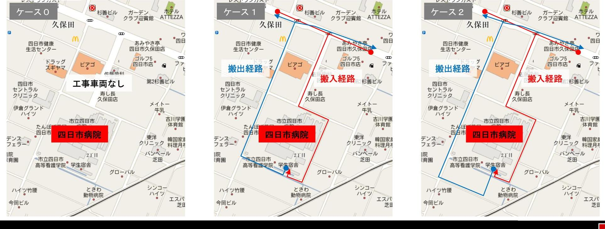
井04-1 検討結果 現況交通の課題把握（例）
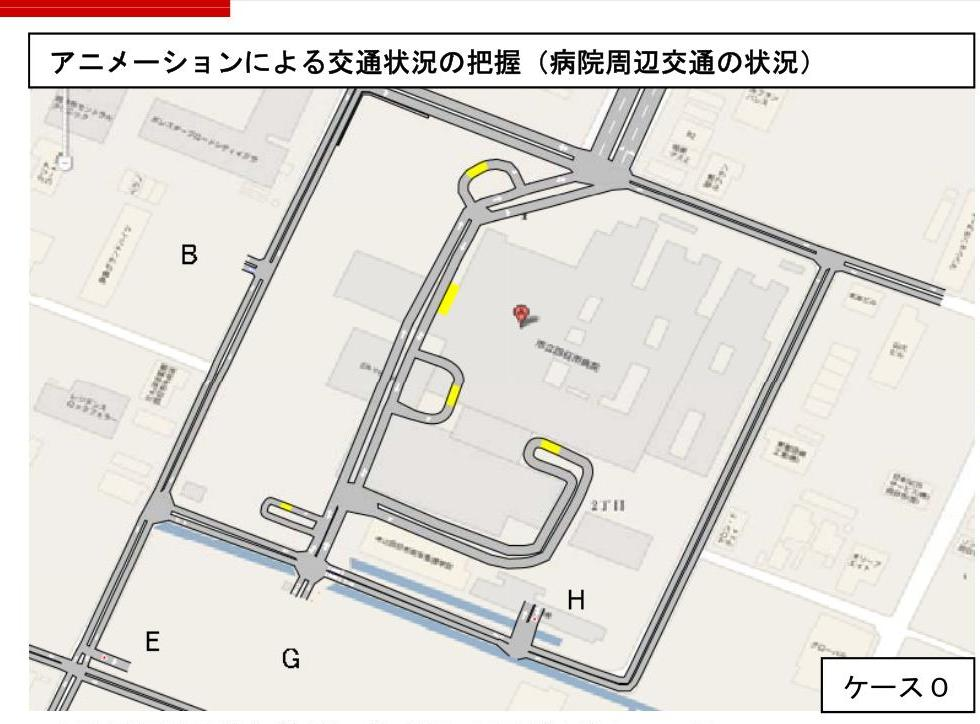
病院周辺は渋滞などがなく円滑に車両が流動している。
表 車両別旅行時間
| 旅行時間（秒） | |
|---|---|
| 外来患者車両（往復路） | 65 |
| 救急車（往路のみ） | 30 |
| 物流車両（往復路） | 70 |
| 工事車両（往復路） | - |
巣往復別、00別に細かく集計することも可能です。
ア二メーションによる交通状況の把握（病院周辺の課題箇所）
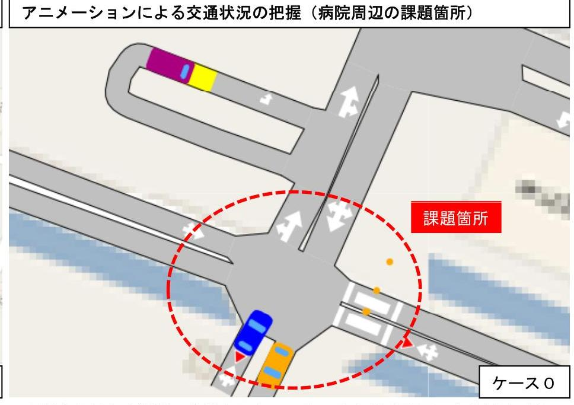
南側駐車場と病院間の交差点においては、外来患者車両の出入り及び歩行者の横断が多いため、注意が必要であるといえる。
井04-2 検討結果 工事車両導線計画仮説案の評価と絞込（例）
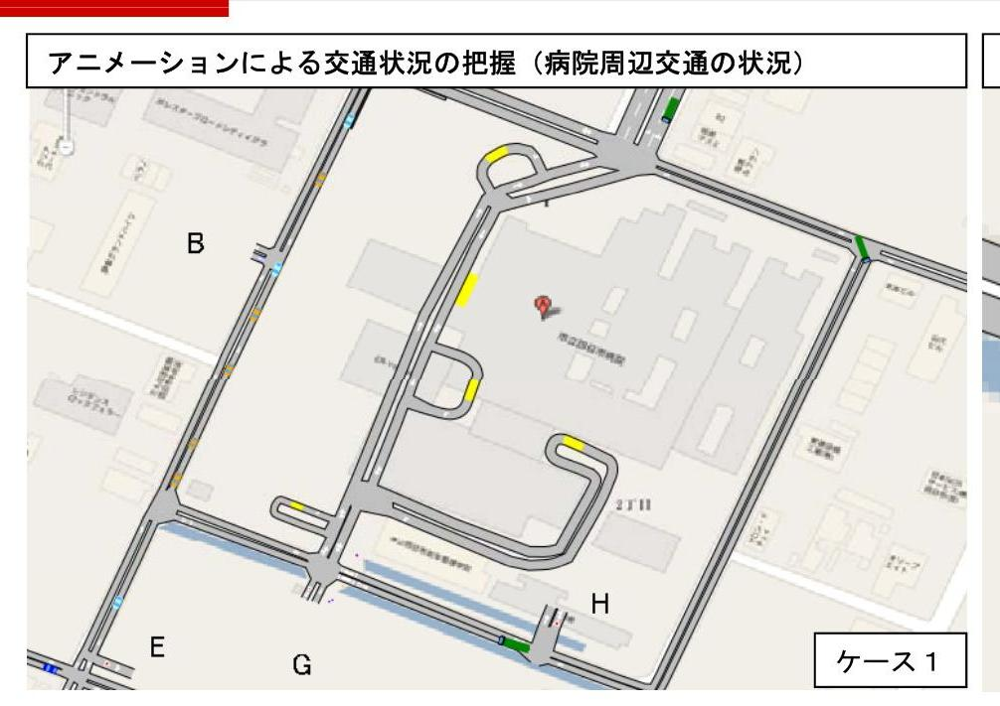
病院周辺は渋滞などがなく円滑に車両が流動している。
車両別旅行時間
表 工事車両導入後の車両別旅行時間（ケース1）
| 平均旅行時間（秒） | |
|---|---|
| 外来患者車両（往復路） | 75 |
| 救急車（往路のみ） | 30 |
| 物流車両（往復） | 70 |
| 工事車両（往路） | 35 |
| 工事車両（複路） | 150 |
検討範囲内における、外来患者の旅行時間は平均75秒となり、現況より長くなっている。
アニメーションによる交通状況の把握（病院周辺の課題箇所）
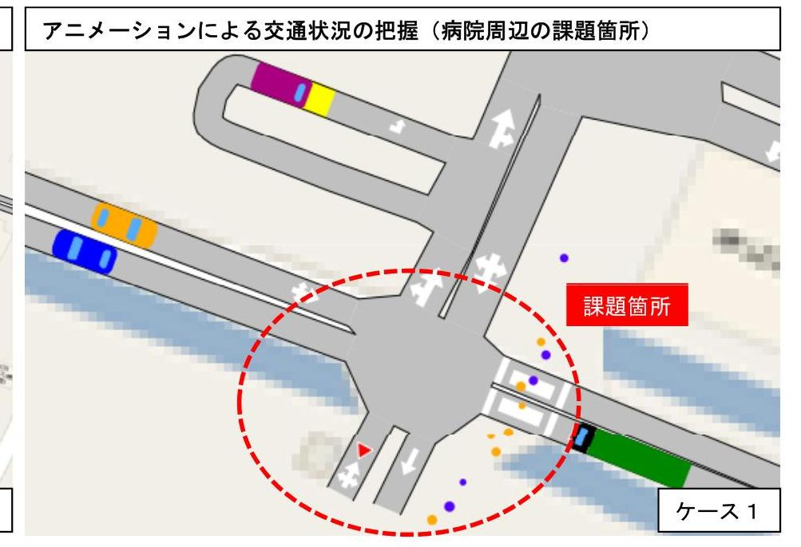
南側駐車場と病院間の交差点において、工事車が両加わることによって、歩行者及び外来患者車両の交錯が多くなることが推測される。
井04-3 検討結果 工事車両導線計画仮説案の評価と絞込（例）
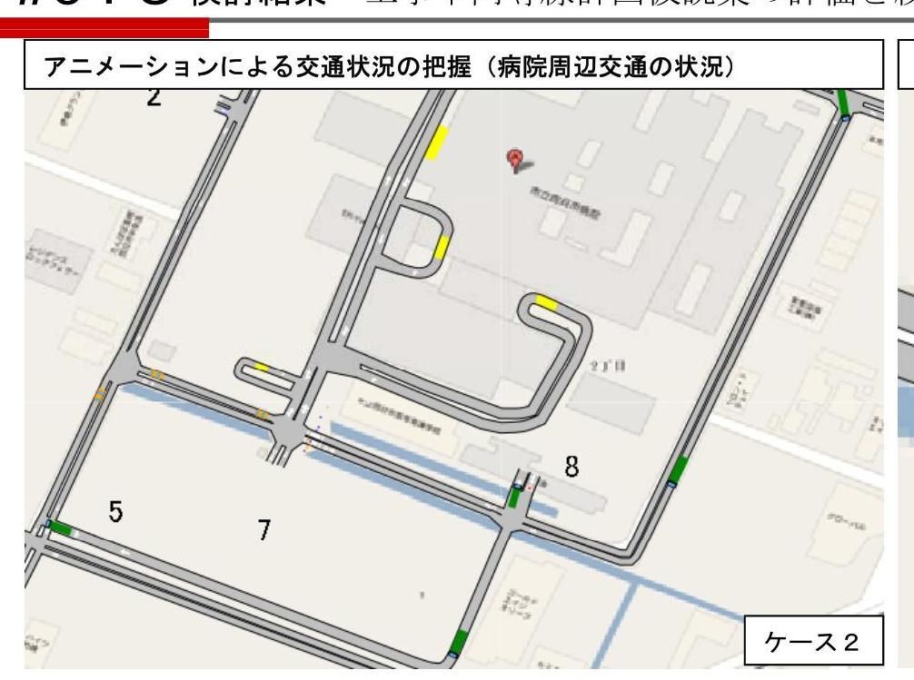
病院周辺は渋滞などがなく円滑に車両が流動している。検討範囲ないにおける、外来患者の旅行時間は平均 x 秒である。
車両別旅行時間
表 工事車両導入後の車両別旅行時間（ケース2）
| 平均旅行時間（秒） | |
|---|---|
| 外来患者車両（往復路） | 65 |
| 救急車（往路） | 30 |
| 物流車両（往復） | 70 |
| 工事車両（往路） | 35 |
| 工事車両（復路） | 90 |
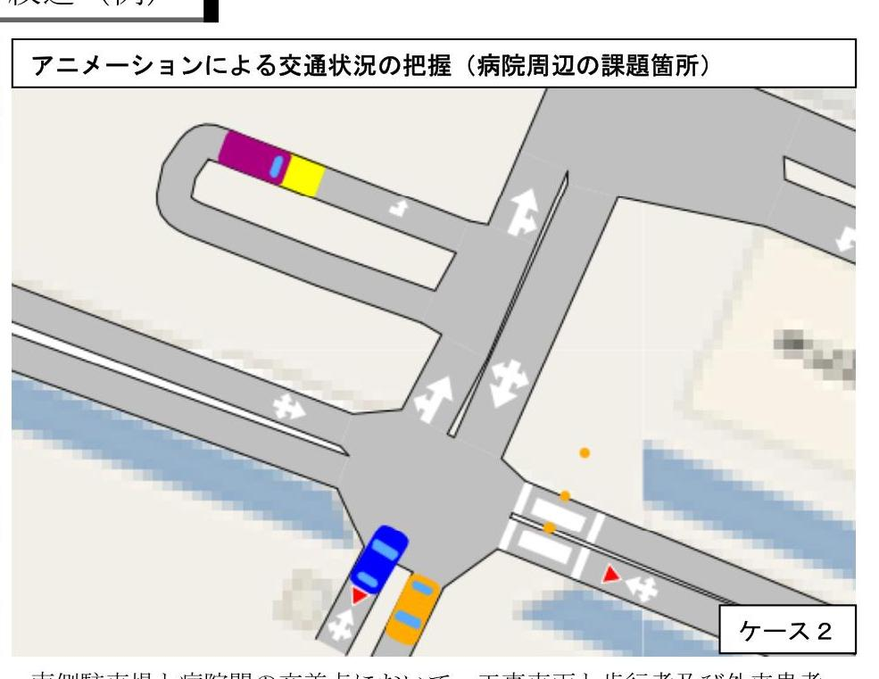
南側駐車場と病院間の交差点において、工事車両と歩行者及び外来患者車両の交錯多くなっている。
井04-4 検討結果 工事車両導線計画仮説案の評価と絞込（例）
検討結果まとめ
ケース 1 、ケース 2 の両ケースともに、周辺交通においては、渋滞が発生する事がなく円滑に車両が流動している。
しかし、ケース 1 においては、病院と南駐車場間において、病院関係車両・歩行者との交錯が多く発生する事が予測される。
また、下表の旅行時間の比較結果に示すとおり、ケース 2 よりケース 1 の撤出時間が多くかかる結果となった。そのため ケース 1 は、旅行時間が多くかかる分、病院関係者車両・歩行者との接触可能性が増えることが推測される。
よって、ケース 2 の工事車両の導線計画が適切であると言える。
表 各ケースの車両別旅行時間比較
| ケース 0 | ケース 1 | ケース 2 | |
|---|---|---|---|
| 外来患者車両（往復路） | 65 | 75 | 65 |
| 救急車（往路のみ） | 30 | 30 | 30 |
| 物流車両（往復） | 70 | 70 | 70 |
| 工事車両（往路） | - | 35 | 35 |
| 工事車両（復路） | - | 150 | 90 |
| 総合評価 | - | 5 | (5) |
井05 その他の主な検討可能事項
- 最大許容可能な工事車両通行台数
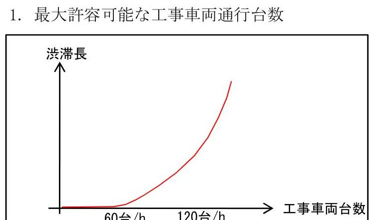 - C02、NOxなどの環境指標の算出
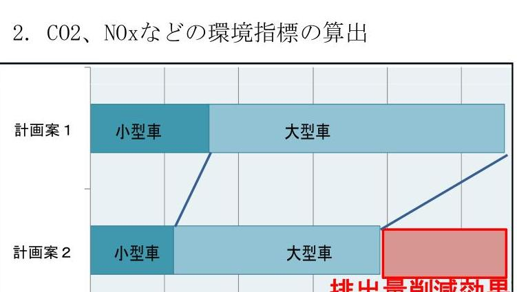 - 道路の視認性の検討
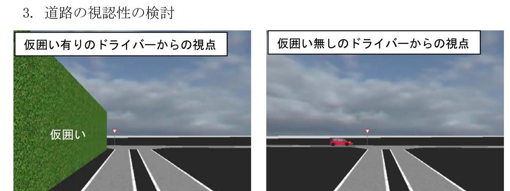